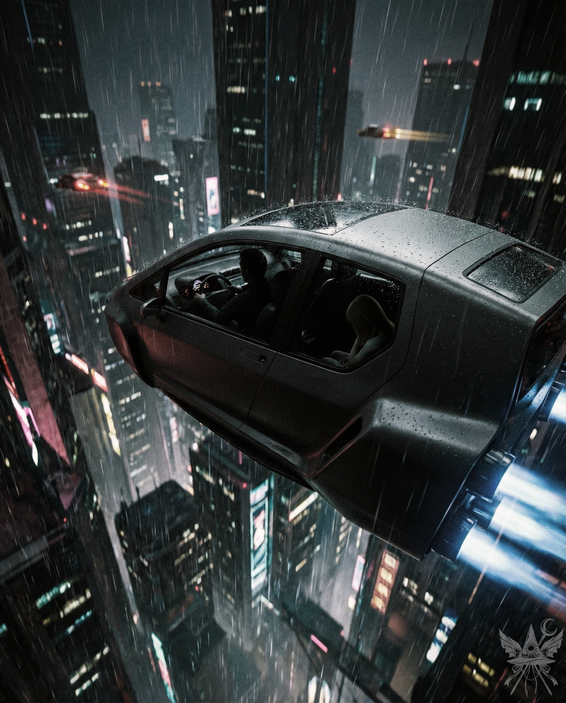

天井のファンが低い唸り声を上げ、重苦しい診察室の空気をひたすらにかき回していた。
「……つまり、またああいうことが起きるかもしれないと？」
「ええ、残念ながら否定はできません。特に思春期はホルモンバランスが乱れやすく、発作が頻繁に起こる可能性も考えられます」
無機質な緑色の壁に囲まれた診察室。恰幅の良い女医はデスクに向かい、深刻そうに眉をひそめている。傍らでは年配の看護師が、空中に浮かぶホログラム画面へと静かに電子カルテのデータを打ち込んでいた。女医と対面するように座っているのは、ブロンドヘアの妻と黒髪の夫――三十代後半の夫婦だ。彼らはすがるような思いで、次なる言葉を待っていた。
「先生……他に、どうにかする方法はないんでしょうか……」
夫が乾いた声で絞り出す。
「処方した薬をきちんと飲ませていただければ、病状の進行は抑えられます。二度と、あのような激しい発作は起きないはずです。ただし、今後の慎重な経過観察と定期的な通院は欠かせません」
「『はず』、ですか……」
妻が鋭い視線を向け、隠そうともしない不信感をあらわにした。
「要するに、ちゆりがまた……私たちや、下の子の淳一を傷つけるかもしれないということですよね？」
「その可能性を完全にゼロにすることはできません。きちんと服薬させ、精神状態の揺れに常に気を配ってください。少しでも異変を感じたら、すぐに救急車を。これ以上、彼女に誰かを傷つけさせるわけにはいきませんから」
夫婦は重い沈黙に沈み、顔を見合わせた。夫が自嘲気味に悲しげな微笑を浮かべると、妻も痛いほどその意味を理解した。
（これが、私たちの背負うべき運命だというのか……）
「……被害に遭った男の子の容態は……？」
妻が恐る恐る尋ねる。
「容態は安定しています。もう命の心配はありませんよ。ただし、リハビリには時間がかかるでしょうね。運び込まれた当初は頭蓋骨骨折の疑いすらありましたが、幸いそこまでの大事には至りませんでした」
「最近の学校の椅子は脆くできてるからねえ……」
年配の看護師が皮肉めいた独り言をこぼしながら、真新しい診察券を差し出した。
「はい、北白河さん」
＊＊＊
「怖い……夜、また……あんなことが起きたら……。どうして、私たちが……こんな目に……！」
自宅に戻るなり、妻は肩を震わせて嗚咽を漏らした。
「仕方ないさ……」
妻はすがるように夫の胸を叩き、堰を切ったように泣きじゃくる。
「……私……淳一と……一緒に寝たいの……」
「ちゆりを一人にする気か？ あんな事件があったばかりだろう。あの子の頭の中で何が起きているのか、誰にもわからないんだ。今はそばにいてやらなきゃ……」
「だったら、あなたが行ってよ。淳一は私が連れて行くわ。こっちの部屋で寝るように言うから」
夫は深く、重い息を吐き出した。返す言葉も見つからず、ただ妻の涙で濡れた目元に優しく口づけを落とす。そして、重い足取りで長女・ちゆりの部屋へと向かった。
（俺が守るしかない……ちゆりのことも、この家族のことも）
＊＊＊
赤と黄色を基調とした、かつては賑やかだった子供部屋。二段ベッドが置かれた床には、壊れたおもちゃのロケットと、まだ電子音の鳴るブラスター銃が転がっている。六歳の弟・淳一はブラスターを手に「ブゥゥン！」と宇宙船のエンジン音を真似て、無邪気に部屋中を走り回っていた。彼は時折、二段ベッドの下段に座り込んだまま虚空を見つめている姉――ちゆりのそばに駆け寄っては、なんとか気を引こうとしていた。
「スターイーグル、応答せよ！ スターイーグル！」
しかし、いくら呼びかけてもスターイーグルからの応答はない。姉の虚ろな瞳は、弟の姿さえ映していないようだった。淳一はくるりと向きを変え、天井から吊るされた惑星モビールの周りをぐるぐると回り始める。そして、死角から現れた高い壁――父親の足にぽつんとぶつかった。
「巨大惑星の重力圏に突入！ 巨大惑星の重力圏に突入！」
不意の体当たりを腹に受け止めても、父親の表情は硬いままだった。彼はそっと淳一の肩に手を置き、無理に作った穏やかな声で告げた。
「淳一。今日は、ママが一緒に寝たいって言ってるよ」
「やったー！」
淳一は歓声を上げ、弾かれたように廊下へ駆け出していく。パタパタという足音が遠ざかりかけたかと思うと、彼は急ブレーキをかけて戻ってきて、ちゆりの足元に駆け寄った。
「第5飛行中隊、別の星系に出発します！ ……おやすみ、ちゆり」
焦点の定まらない瞳のまま、ちゆりはゆっくりと首を動かして弟に視線を移した。そして、感情の抜け落ちた声で、小さく「おやすみ」とだけ呟いた。
＊＊＊
ちゆりはパジャマ姿のまま、一日中ベッドに横たわっていた。食事とトイレの時以外は、ただ天井の染みを見つめるだけだ。かつてこの家中に響き渡っていた娘の無邪気な笑い声を思い出すと、父親の胸はギリギリと締め付けられた。妻は娘から目を逸らし、現実から逃避している。このままでは家族が崩壊するのは時間の問題だった。
（俺に何ができる……？ いや、もしかしたら何もできないのかもしれない。それでも、できることは全てやらなければ……）
父親は、そっとベッドの縁に腰を下ろした。
「ちゆり……気分はどうだい？」
「……普通……」
ちゆりは視線を動かすこともなく、抑揚のない声で答えた。砂色の髪はひどく乱れ、梳かす気力すら失われているようだった。妻はちゆりに近づくことさえ恐れており、ちゆり自身も身だしなみを整えるような状態にはない。
「何か食べたいものはあるか？ 水にするか？ ヨーグルトもあるぞ」
「ヨーグルト！ パパ、ヨーグルト食べたい！」
その言葉を聞いた瞬間、ちゆりの虚ろな瞳に微かな光が戻った。小さな手が、父親の手を力強く握りしめる。二人はキッチンへ向かい、冷蔵庫からヨーグルトを取り出してリビングのソファに並んで座った。残っていたヨーグルトは二つだけだったが、父親は自分の分を諦めた。子供から食べ物を奪うことなど、どうしてできようか。だが同時に、言いようのない重い不安が彼の胸に渦巻いていた。
（もしかしたら、ちゆりとこうして平穏に過ごせるのは、これが最後なのかもしれない……）
冷たい予感が、じわじわと背筋を這い上がっていった。
＊＊＊
その夜、二人は同じベッドに横になった。ちゆりは父親の肩に頭を預け、暗闇の中で静かに息を潜めている。まだ寝入ってはいないようだった。
「パパ、何考えてるの？」
「ちゆりのこと……家族のこと……ママと淳一のことさ」
「ママ、どうして淳一を連れて行ったの？」
「それは……」
父親は言葉を詰まらせた。
「私が、淳一に何かするって思ってるんだろ？」
「ちがうよ、そんなことないさ。ママは……ただ、淳一としばらく一緒に寝たいだけなんだ」
（嘘だとわかっている。だが、これ以上この子を傷つけたくなかった）
ちゆりは大きく息を吸い込み、父親の腕をぎゅっと抱きしめた。その小さな体は、かすかに震えている。
「パパ……私を捨てないで……置いて行かないで……嫌いにならないでよ……」
ちゆりの切実な懇願に、胸が張り裂けそうだった。
「ちゆり、誰も君を嫌いになんてならない。そんなこと考えなくていいんだ。パパもママも、君のことをとても愛している」
「……約束して」
か細い声が、今にも闇に溶けて消え入りそうだった。
「約束するよ、ちゆり。約束する」
父親はちゆりの小さな背中を強く抱き寄せ、その頼りない温もりを確かめるように、何度も繰り返した。
（ちゆりは俺が守る。何があっても……）
＊＊＊
どうしてこんなことになっちゃったんだろう。
あの日、クラスメートは私をからかっただけだった。くしゃくしゃに丸めた紙くずを投げてきて、バカみたいに笑って……。でも、彼を傷つけるつもりなんて、ほんとは少しもなかったんだ。急に、何かが私の中に入ってきたみたいで……目の前が真っ白になって……。
気がついたら、教室の椅子をぎゅっと握りしめていた。本当は、そんなつもりじゃなかったのに。彼が床に倒れて、ピクリとも動かなくなっていた。周りの子が私に向かってきて、みんな敵に見えた……。それからはずっと、誰かにつかまって、怒鳴られて、うるさくて……。
次に目を覚ましたら、病院のベッドに縛り付けられていた。首には冷たい注射の跡。もしかして、誰かを殺してしまったんじゃないかって、怖くて仕方なかった。でも、そうじゃなかった。よかった……。
どうやら、私は病気らしい。春と秋になると、すごくイライラして、ちょっとしたことでケンカばかりしちゃう。それから、まるで操り人形みたいに、何も感じなくなって、体が動かなくなっちゃうんだ。みんな、
「ちゆりが悪いんじゃない。病気のせいなんだよ」
って言う。
でも、本当は違う気がする。みんな、私のことを怖がってる。近づきたくないんだ。ママだって、私を避けるようになってしまった……やっぱり、私は悪い子なんだ。意地悪で、残酷で……誰にも近づいちゃいけないんだよ。
圭太くんがそう言った。圭太くんの言う通りなんだ……。
毎日、薬を飲んでる。おかげで、あの時みたいなことはもう起きてない。でも、ママは今でも私を避けてる……。パパだけは……パパだけは私を絶対に捨てないって約束してくれた。いつか、私も普通の女の子に戻れるかな……。
＊＊＊
「一体、どうするつもりなんだ！？」
夫の怒鳴り声に対し、妻は冷酷なまでに落ち着き払って言い放った。
「わかってるでしょ？ ちゆりには、あそこしかないの。今の学校じゃ、みんなあの子を避けてるわ。先生だって怖がってる。養護学校なら、ありのままのちゆりを受け入れてくれる」
夫は眉根を深く寄せた。
「ありのまま？ ちゆりがおかしいって言うのか？」
妻の目に涙が滲む。それでも、彼女は強い口調で言い切った。
「ええ、あの子はおかしいの。薬をやめたら……ちゆりの本当の姿がわかるわ」
「そんな……ちゆりは……そんな子じゃない……」
夫は狭い部屋の中を歩き回った。行き場のない怒りと深い悲しみが、胸を締め付ける。
（ちゆりをそんな場所に送るわけにはいかない……俺の娘だ……家族なんだぞ……！）
妻の目をじっと見つめ返すが、反論の言葉が出ない。ちゆりを隔離された養護学校に送るなど、考えたくもなかったが、それを覆すだけの現実的な解決策も、気力も湧いてこない。妻の言葉を受け入れる以外に、道は残されていなかった。
「もう決めたの。今更何を言っても無駄よ。明日、手続きするわ。もちろん、面会には行くけど」
＊＊＊
雨の低周波音が防音ガラス越しに響き、エアカーの静かすぎる駆動音が密閉された空間の沈黙をより痛々しく際立たせている。
無機質なグレーと黒で統一された車内には、ダッシュボードのホログラム計器から放たれる冷たい青色LEDの光が満ちていた。運転席では、グレーの白衣を羽織り、銀縁眼鏡をかけた父親が、航空機の操縦桿のようなハンドルを両手で固く握りしめている。彼は助手席の娘の方を一切見ることなく、ただ前方の航路だけを直視していた。
助手席に座るちゆりは十二歳になっていた。濃紺のブレザーに白い丸襟シャツ、赤いリボンタイという格式高い寄宿学校の制服に身を包み、膝の上に乗せた硬質なシルバーのアタッシュケースを両腕で強く抱きしめている。
窓の外には、雨に煙る巨大なサイバーパンク調の摩天楼が広がっていた。空中に浮かぶハイウェイ、けばけばしいマゼンタやシアンのネオンサイン、未知の言語が入り乱れるホログラム広告が、容赦ないスピードで後方へと飛び去っていく。冷たい未来都市の輝きが彼女の頬を照らし、雨の影とネオンの光が、まるで拭えない涙のように落ちていた。ちゆりは唇を真一文字に噛み締め、目に薄っすらと涙を溜めながらも、決して泣くまいとする強情な表情で、窓の向こうの冷徹な世界を睨みつけていた。

（俺は最低の……クズ野郎だ……）
父親は小型飛行車の操縦桿に、重い額を押し当てた。窓の外、高層ビル群の無数の光が夜空を埋め尽くし、ただ虚しく流れ去っていく。助手席のちゆりは、虚ろな瞳で前方の何も映らない虚空を見つめ続けている。物理的な距離は近いのに、二人の間には数光年も離れているかのような冷え切った空気が横たわっていた。
（ちゆりのこの状態は……母親の血筋から……遺伝したというのか……？
この家族は……一体どうなるんだ……）
＊＊＊
ちゆりの異質さは、一目見ればすぐにわかった。恵まれない境遇の子供たちが集まるこの場所でも、彼女の抱える影はひと際深く、生気すら感じられないその姿は、見ているだけでも胸が締め付けられるようだった。親の愛情を知らずに育った子供たちは他にもいるが、ちゆりの孤独は「実の親に明確に拒絶された」という絶望に根ざしており、はるかに深く暗い闇を抱え込んでいたのだ。
赴任した当初、私は彼女と意図的に距離を置いていた。全ての子を救えるわけではないという現実的な理由もあったが、何より、彼女の姿に過去の自分を重ねてしまうのが怖かったからだ。私にも似たような経験がある。ちゆりほど深刻ではなかったにせよ、十三歳で両親と大喧嘩をして家を飛び出して以来、ずっと独りで生きてきた。今にして思えば本当に馬鹿な家出だったと思うが、だからこそ、この養護学校を研修先に選んだ理由も、自分自身で何となく腑に落ちていた。ここの子供たちはどこか普通とは違っていて、短気で社会に馴染めない私にも通じる何かがあったのだ。休憩時間になるたび、
「こっそりちゆりの薬を分けてもらおうかしら」
などと、自嘲気味に考えてしまうほどだった。
私はこの学校で、古典力学を教えていた。ちゆりのクラスは学力にかなりのばらつきがあったものの、中には目を見張るような才能を秘めた生徒もいた。絶望に塞ぎ込んでいない子供たちは、不器用ながらもそれぞれの方法で、自分たちの能力や感情を精一杯表現しようともがいていた。
ある時、彼らの演劇クラブの発表を見に行ったことがあるのだが……あれは見に行かなければよかったと後悔した。あまりにも重く、救いのないテーマの芝居を子供たちに演じさせるなんて。あの夜、私は一晩中泣き明かしたわ。
ちゆりは、とにかく難問を解くことが好きだった。普段は物静かで、おとなしくぼんやりしているように見えるのに、ひとたび解けない問題に直面すると、別人のように熱中していくのだ。授業中だろうとお構いなしにカバンの中身をひっくり返し、必死な形相で教科書のページをめくって公式を探し求める。とりわけプログラミングの才能は突出しており、十三歳にして独自のデータベースや、複雑なプラットフォームゲームを構築していたという。その後はさらに深く、誰にも理解できないような難解なプログラムの世界へと、彼女はのめり込んでいった。
＊＊＊
放課後の薄暗い教室で、ちゆりがパソコンの画面に齧り付いているのを見つけた。モニターは真っ赤なエラーと警告メッセージで埋め尽くされているというのに、彼女はまるで気にも留めていない様子だった。
「ちゆり、ちょっと！ その警告、無視しちゃダメよ。空ポインターの参照外しじゃないの！」
「空じゃないんです……岡崎先生、空じゃないんです」
ちゆりは虚ろな瞳のまま振り返り、唐突にむき出しの電線を私へ差し出した。二本の銀色の芯線が、まるで昆虫の触角のように不気味にピンと立っている。
「まさか、これを私に持てって言うの？」
「ええ……そうすれば、ポインターは空じゃなくなるんです。試してみてください」
馬鹿だったのは私の方だわ。受け取った瞬間に強烈な電流が走り、私は反射的にちゆりの頬を思い切り平手打ちしていた。まさかこんな危険な真似を平然とさせようとするなんて。まだ私より三つも年下の子供なのに。
叩かれたのが悔しかったのか、ちゆりの瞳に初めて獰猛な光が宿った。彼女は近くのパイプ椅子を軽々と持ち上げると、思い切り私の背中へと振り下ろしてきたのだ。もちろん、私も黙って殴られはしない。容赦なくやり返したわ。
しばらく激しく取っ組み合った後、私たちは冷たい床に倒れ込み、荒い息を吐いていた。
「今度は……ここからも追い出されるんですか……」
ちゆりが、初めて不安そうな、年相応の怯えた声で呟いた。
「まさか。ちょっと退屈だったから、刺激が欲しかっただけよ。ちゆりもそうでしょ？」
「ほ……本当ですか……」
その時、パソコンのスピーカーから、機械的な合成音声が冷たく響き渡った。
『係数10.34』
「だから言ったでしょ、参照外しだって！」
私は床に寝転がったまま、呆れたようにため息をついた。
「ねえ、ちゆり。それ、一体どんなプログラムなの？」
「量子確率効果を使った、未来予測プログラムです。いいことも、悪いことも」
背筋が凍った。こいつ、一体何を考えているの？ まさか……。
「ちゆり、そのプログラムはもう誰にも見せない方がいいわ。絶対に誤解されるから」
私は起き上がり、彼女の目を真っ直ぐに見つめて真剣に忠告した。
＊＊＊
それからというもの、私は彼女の才能と研究にすっかりのめり込み、意を決してちゆりに自分自身の研究内容を打ち明けることにした。当時の学会では、重鎮たちが「物質こそが全てである」と声高に主張し、超常現象の存在を頭ごなしに否定する風潮が蔓延していたのよ。幸いなことに、ちゆりはそんな凝り固まった常識に染まっておらず、純粋な知的好奇心だけで私の突飛な話に耳を傾けてくれた。
超常現象を科学の力で解明する――そんな途方もない夢を共有できる、頼もしい相棒ができた瞬間だった。この息の詰まるような閉塞的な世界で、同じ志を持つ理解者がいるということが、どれほど心強かったか。
もちろん、意見が激しくぶつかり合うこともしょっちゅうだったわ。研究が行き詰まったり、周囲からのプレッシャーに押し潰されそうになった時は、お互いに遠慮なく苛立ちをぶつけ合って発散した。時にはそれが物理的な殴り合いに発展することもあったけれど、真剣な議論と衝突を重ねるうちに、ちゆりは見違えるように変わっていった。かつての陰鬱で引っ込み思案だった殻を完全に破り捨て、旺盛な知的好奇心と、少々のことでは動じない大胆さを武器にする、一人の立派な研究者へと成長し始めたのだ。
やがて私の養護学校での実習期間が終わり、大学の寮へ戻ることになると、ちゆりとの共同研究は物理的に難しくなってしまった。最初のうちはオンラインでデータをやり取りし、たまに直接会って話すこともできたが、二人ともすぐにそれでは物足りなくなった。
そこでちゆりは、私のいる大学へ編入するため、残りの全学年の試験を飛び級で一気にパスするという、常軌を逸した無謀な目標を立てたのだ。それからの一年間、彼女は文字通り寝食を忘れて勉強に没頭した。その凄まじい執念と努力には、私でさえ心底感服させられたわ。かつて両親と喧嘩して家を飛び出した私にとって、彼女のそのひたむきな姿は、痛いほど共感できるものだったから。
一年後、久しぶりに再会したちゆりは、まるで別人のような顔つきになっていた。以前の陰鬱で危うい雰囲気は完全に消え去り、落ち着き払った大人の女性の風格すら漂わせていたのだ。ただひとつだけ気がかりだったのは、彼女が両親と完全に絶縁状態になり、彼らのことを冷たく「裏切り者」と呼ぶようになっていたことだった。
＊＊＊
ちゆりは見事に難関試験を突破し、特待生として奨学金を得て私の大学へ編入してきた。その頃には、私はすでに博士号を取得していたわ。もちろん、提出した論文には魔法や超常現象といった反科学的な内容は一切盛り込んでいない。まずは科学界で確固たる地位と発言力を得るための、単なる戦略よ。何世紀にもわたって続いてきた科学の傲慢な誤謬も、誰もがぐうの音も出ない確固たる証拠さえ突きつければ、必ず正せると信じていたから。
私たちの共同研究は飛躍的に進展した。確率の原理に基づく様々な観測装置を開発し、瀕死状態のラットの脳波パターンから、いわゆる「魂」が肉体を離脱する瞬間を特定する手法を確立した。さらに、生体磁場の精密な測定から、人間の体内には七つのエネルギーセンター――チャクラが存在することまで突き止めたのだ。私たちは完全に研究に没頭し、寝る間も惜しんで膨大なデータを集め、狂ったように分析を続けた。
しかし、私たちは科学至上主義者たちの頑迷さを、あまりにも甘く見過ぎていた。彼らの理解力と柔軟性を、不当に過大評価していたのよ。学会の老いぼれた重鎮たちは、魔法の存在を物理的に証明する決定的な証拠がない限り、私たちの理論に一切耳を貸そうとはしなかった。
そこで私たちは、新たな仮説を立てた。別の次元に「魔法が当たり前に存在する世界」があり、そこから魔法のエネルギーをこの世界に持ち込めるのではないか、と。ちゆりは以前から、魔法が日常的に使われ、幻想的な生き物たちが暮らす未知の世界を、何度も夢で見ていたのだ。もしかしたら、その夢の世界こそが魔法の真の源なのではないか？ そう考えた私たちは、自らの手でその世界へ行くことを決意したわ。
それを可能にしたのは、皮肉にも私が修士・博士論文で発表した、“公式に認められた”発見だった。超空間とは単なる別次元ではなく、「アナ」と「カタ」と名付けた二方向のベクトルを持つ特殊な空間であるという理論よ。ある実験の最中、私たちは宇宙の深淵、深い「アナ」の方向から、我々の確率装置に対して極めて強い影響を与える未知の信号を検知したのだ。すぐさま装置を改良し、発信源の座標を特定した。
これまでの研究成果で得たなけなしの資金を、全てこの探査船の建造に投入したわ。広大な宇宙を駆け抜ける数日間の旅の末、ついに私たちの悲願は叶った。
私たちはこの目で確かに、本物の魔法を目撃したのだから。
[SYSTEM ALERT: 音響兵器デプロイ完了]
▼ 本章の絶望を1000%味わうための専用聴覚データ ▼
■ YouTube：『Theory of Stray Stars (邦題：はぐれ星の定理)』